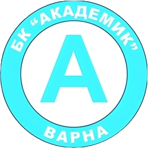

БК "Черно море"През последни 15 години школата на Черно море Контакти с отбора:-д-р Ташев - 0888623892 |
 |
БК "Шоутайм"Нашите треньори са с огромен стаж в клубни и Национални
отбори, Контакти с отбора:- Кирил Петров - 0889805674 |
.png) |
БК „Академик“ ВарнаОт създаването си Баскетболен клуб „Академик“ обединява деца Контакти с отбора:- Борис Стоянов - 0894040236 |
 |